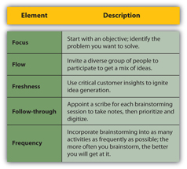

Imagine you wanted to sell a new digital camera to your teenage sister. How would you convince her to buy? You might start by thinking of the things that matter to teenagers—specifically your sister. Maybe you’d say, “It’s small and lightweight so you can fit it in your purse and take it with you when you go out with your friends. It has a new sleek design, and you can customize it by ordering it in one of six different colors.” You’ve considered things your sister might need (a camera she can take on a night out), and you’ve identified an opportunity that might appeal to a teenaged girl (a combination of appearance, style, and functionality).
Now what if you were selling the same product to your grandmother? She might be more concerned with reliability than appearance, and she might also be intimidated about using a digital camera if it’s a technology she hasn’t tried before. “This camera doesn’t have a lot of bells and whistles,” you could say. “It’s straightforward and easy to use and makes an excellent choice for a first digital camera purchase. It’s perfect for taking pictures of the grandkids. It has also been highly rated as a reliable and high-quality product.” You’ve addressed her problem (intimidation about using a new technology), and you’ve helped her discover opportunities (taking photos of the grandkids).
Even though you’re selling the same product to both people, you’re using a very different approach. Ultimately, what you’re selling is not a product but a solution based on your customer’s specific needs. This is the heart of the preapproach. There are three simple steps you can follow to turn your products and services into customer-specific solutions.
Great salespeople don’t sell, they solve. As you research your prospect, you should be able to identify problems that are specific to that person or organization: Do they need to reduce costs? Do they need to increase sales? Do they need to drive traffic to a Web site or generate leads for their new service? Or maybe they need something that will set their brand apart from their competitors. In the case of individual consumers, the problem might be very different: Does she want to have the latest in fashion without couture prices? Does she want the latest technology “toys” as soon as they are available? Does she want a car that is a dependable form of transportation and friendly to the environment?
Sometimes people are forthcoming about their problems, but many times it’s up to you to ask the right questions; the ones that will uncover what your prospect needs or where opportunities exist. (Remember from Chapter 1 "The Power to Get What You Want in Life" that is one of the traits of a successful salesperson.) For instance, if your prospect is buying from a competitor, you might ask questions like “What were your expectations when you signed up for this service? What has your actual experience of the service been? What would you like to see happen differently?” The prospect might not fully realize what his problems are.Paul Cherry, Questions That Sell: The Powerful Process for Discovering What Your Customer Really Wants (New York: AMACOM, 2006), 25. Often, especially in B2B sales, the goal of your first sales call will simply be to identify your prospect’s specific areas of need. You won’t make a pitch; you’ll just ask questions and listen.Mark Anthony, “The Psychology of Selling,” BNET, April 1995, http://findarticles.com/p/articles/mi_qa3629/is_199504/ai_n8730867/?tag=content;col1 (accessed July 15, 2009).
Asking questions often opens up opportunities you might not otherwise discover. There will be occasions when your prospect doesn’t have an immediate problem she can identify, but if you’ve done your research and know something about her goals and priorities and if you ask the right questions, you have the chance to uncover useful opportunities. What can help him achieve his goals even more efficiently? What kinds of results would he like to see?Geoffrey James, “Solution Selling Is Dead,” BNET, October 29, 2007, http://blogs.bnet.com/salesmachine/?p=158&tag=content;col1 (accessed July 15, 2009). What would he like to have if he only knew it was possible?
Think about the advent of the cell phone. Consumers had a problem: their lives were getting busier, and they wanted to be able to communicate on the go. They needed a phone they could use when they weren’t at home or in the office. What do you do on a car trip if you get lost or your car breaks down? How do you find someone in a crowded place? How can people get in touch with you if you’re almost never home? Cell phone providers figured out consumers’ problems, and they solved them. Then along came the iPhone. Most cell phone users wouldn’t have said they needed a device that could capture videos and photographs, play MP3s, store a day planner, surf the web, run hundreds of different applications—oh, and make phone calls too—using a single slick interface. But Apple saw an opportunity, and they helped consumers to see it too: over a million iPhones sold the first weekend the product came out in stores.Philip Elmer-DeWitt, “Munster: 500,000 New iPhones This Weekend,” Fortune, June 18, 2009, http://apple20.blogs.fortune.cnn.com/2009/06/18/munster-500000-new-iphones-this-weekend/ (accessed July 15, 2009).
Once you’ve identified your customer’s problems, take the time—either with a team or on your own—to brainstorm solutions and opportunities that address your prospect’s specific needs. Sometimes solving your prospect’s problem is a straightforward task, but often with larger sales, particularly B2B sales, coming up with a solution that is tailored to your customer’s needs requires time and thought. No two prospects are the same, so no two solutions will be exactly the same. When Joel Ronning, CEO of e-commerce company Digital River, wants to solve customer problems and generate ideas, he sits down with the senior employees of his company for a brainstorming session. The technique has boosted sales, earned the company hundreds of thousands of dollars, and led to a small business award for “best idea.”Allison Stein Wellner, “A Perfect Brainstorm,” Inc., October 1, 2003, http://www.inc.com/magazine/20031001/strategies.html (accessed July 15, 2009). As a salesperson, your job is to solve customer problems, not push a product. In other words, you’re offering solutions that include unique and different ideas, not selling products. For this reason, brainstorming—the process of generating ideas—is a crucial part of the selling process.
When you go into a brainstorming session, there are several techniques that will help you generate effective results.
Figure 8.4 Five Fs of Brainstorming
Brainstorming, as an idea-generation tool, is a proven and powerful part of creative development. However, keep in mind that some of the ideas you come up with in the brainstorming process will be stronger than others. A great idea has two important elements: it solves your customer’s problems and, in B2B sales, it reinforces your customer’s brand. Consider consultant Mike Rubin’s solution to a problem faced by one of his customers, a Harley-Davidson dealer, who wanted to boost sales and appeal to a broader customer base. Mike’s Famous Harley-Davidson Dealership was already drawing in the “hard-core” bikers, but the store’s owner wanted to reach the more conservative, baby boomer demographic too. By turning the dealership into a destination, complete with a Harley museum and restaurant, Rubin hit on a solution that both addressed the customer’s problem and remained true to the Harley brand image. The restaurant, designed to resemble a factory cafeteria, appealed to tough bikers and families alike, and the museum—also a family-friendly draw—was laid out in a warehouse style that reflected the company’s brand image of independence, toughness, and the open road. The result? In three years, bike sales increased from 800 to over 1,700 annually.Donna Fen, “(Re)born to Be Wild,” Inc., January 2006, http://www.inc.com/magazine/20060101/reborn.html (accessed July 15, 2009).
They Practice What They Preach
Ideo, a premier product development company, believes that innovation is the only path to success. Collaboration and idea generation are a way of life at the company that invented the Apple mouse, Polaroid I-Zone pocket camera, and Palm V. This article highlights how they support and encourage this creative culture.Linda Tischler, “Seven Secrets to Good Brainstorming,” Fast Company, December 19, 2007, http://www.fastcompany.com/articles/2001/03/kelley.html (accessed October 31, 2009).
http://www.fastcompany.com/articles/2001/03/kelley.html
Source: Fast Company
If you are working out of your home and you don’t have a group of people with which to brainstorm, it’s not a problem. Get your colleagues in other areas involved by having a brainstorming conference call. Or have a virtual brainstorming session through your professional social network by using the discussion feature on LinkedIn, getting ideas from your followers on Twitter, or creating a wikiA collaborative Web site that allows multiple people to share information, documents, videos, and pictures. where people can share ideas at any time and see the ideas that others have created.
The bottom line is that selling is all about selling your brand (remember from Chapter 1 "The Power to Get What You Want in Life" that a brand is unique, consistent, and relevant and has an emotional connection with its customers). When you really understand your customer and their needs and motivations, you can be extremely creative about the way you position and tell the story of your brand.
How Ideas Are Born
(click to see video)Tim Brown, the CEO of the creative design firm Ideo, discusses how ideas are created.
Source: SocialEdge
Once you have brainstormed a customer-specific solution, you want to find a way to showcase your solution in the best light. How will you present this idea to your prospect so that he can immediately see its relevance to his situation? How will you establish the value proposition you have to offer? How will you position your idea as a benefit to your prospect, not a self-serving sales pitch? As part of your preapproach, you should identify both a general and a specific statement to highlight the benefits of your solution or opportunity. When you deliver value to your prospect, you earn the opportunity to be a business partner, not just someone who is trying to sell something.
Imagine you work for a dairy products distributor that sells wholesale to restaurants. You’ve researched one of your prospects, a downtown deli, and have identified one of its major problems: the company is losing business to the sandwich place across the street. Your prospect may not yet realize the source of the trouble, but you have an idea. It seems that the prospect’s competitor has cheaper sandwiches, and you know for a fact that part of the problem lies in the cost of the ingredients. Your prospect currently pays 10 percent more for the cheese it gets from its current vendor than you would charge for the same product. If the deli started buying cheese from you, it would be able to lower the cost of its sandwiches to a more competitive price and draw some of the sales that are going to its competitor. You have also brainstormed how the deli can create a “signature sandwich”: a unique combination of meat and cheeses that only it offers. The sandwich provides a point of difference for the deli and a reason for previous deli customers to come back. In other words, you are helping to build your prospect’s brand and business with a great idea.
This is a good solution, but you can’t walk into the deli and tell your prospect, “I want to sell you some cheese.” Your prospect doesn’t need cheese; he needs to increase his sales, and he’ll probably tell you to go away because he already has a dairy products vendor. It’s your job to frame the solution in such a way that your customer can easily see its relevance to his problem; you want to answer the “What’s in it for me?” question early on in the sales call.Todd Natenberg, “What’s in It for the Prospect? Everything—If You Tell Them,” SelfGrowth.com, http://www.selfgrowth.com/articles/Natenberg12.html (accessed July 15, 2009). Begin by drafting a general benefit statementAn opening statement for a sales call that gives the big picture of how your solution meets your prospect’s need., a statement that gives the big picture of how your solution will meet your prospect’s need. For instance, you might say, “I have an idea for a way to increase your sandwich sales by 15 percent.” Your statement showcases a solution rather than a product.
General benefit statements, as opposed to specific benefit statements, are broad enough that they would be important to most people.Philip Gerber, “The Sales Professional: Initial Benefit Statement,” Houston Business Review, April 2005, http://www.houstonbusiness.com/HBReview/contributors/philipgerber/gerberarchive13.html (accessed July 15, 2009). They might address things like improving company visibility, expanding the business, increasing profits, or cutting costs. The specific benefit statementIdentifies the way a solution addresses a prospect’s particular situation and needs., on the other hand, comes once you’ve grabbed your prospect’s attention. It identifies the particular way your solution applies to your prospect, and it demonstrates that you’ve done your research and understand the needs that are unique to his company or situation. For instance, you might say, “Your food cost is too high, and it’s keeping you from competing with other businesses. I can help you cut your food costs so that you can afford to sell your breakfast burrito for under $2.99. Would that be something you would be interested in?” If you’ve done your research and brainstormed an effective solution, your benefits statements are the tools that will give you the power to convey that information clearly and effectively.
Table 8.1 Benefit Statement Examples
| General Benefit Statement | Specific Benefit Statement |
|---|---|
| I have an idea that can help you lower your labor costs. Is that something you might be interested in? | If I can prove that I can help you reduce your labor costs by 10 percent, would you be willing to make a commitment? |
| I have some ideas about how to increase traffic to your Web site. Is that something that is of interest to you? | If I can show you how our social networking tool can drive 15 percent more traffic to your Web site during key seasonal periods, would you be willing to consider it? |
| I have some ideas about how to decrease your transaction time and take care of more customers every hour. Is that something you are interested in? | If I can show you how our product can decrease your transaction time for each customer by at least one minute, would you be interested in looking at the proposal? |
Assume you worked in the Apple Store. Identify one general benefit statement and one specific benefit statement for each of the following: